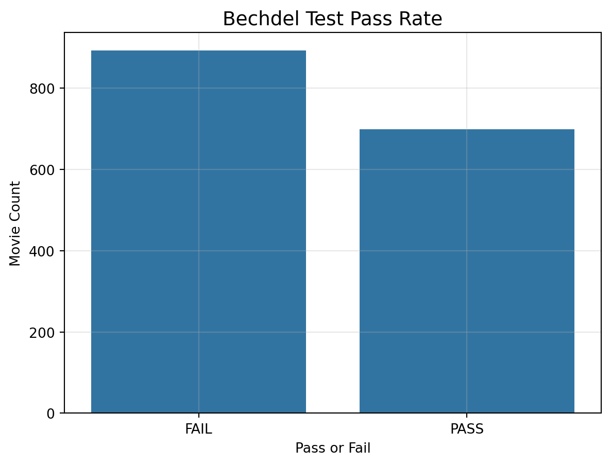
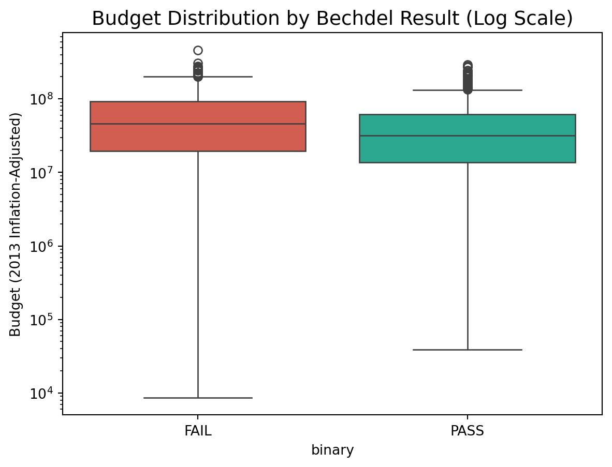
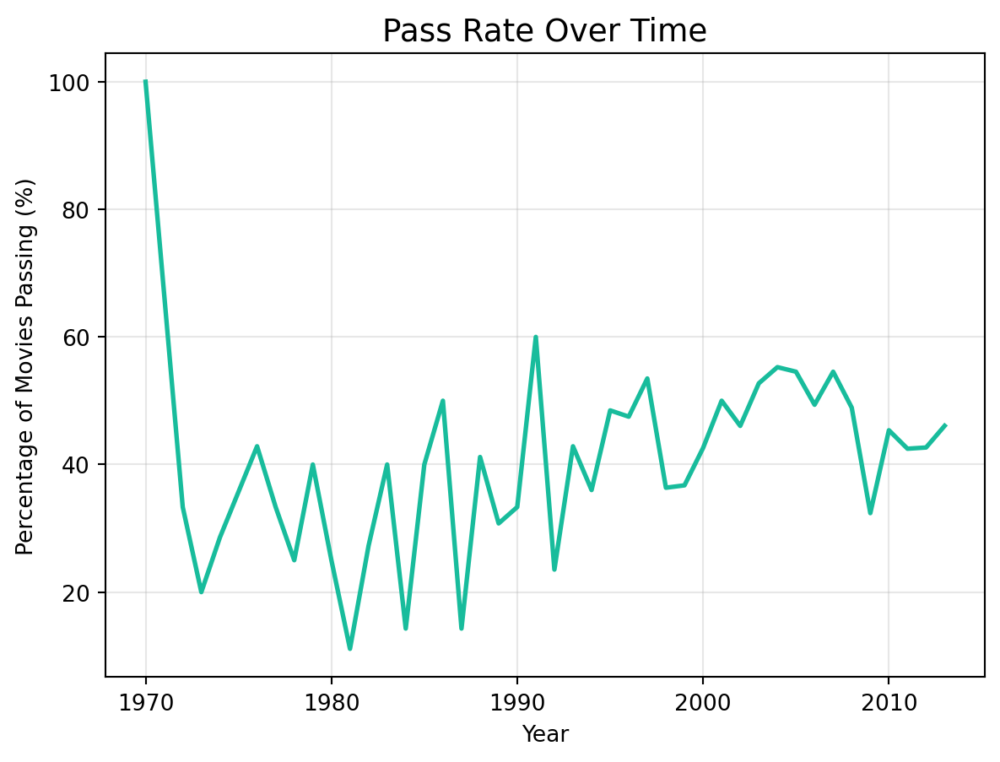
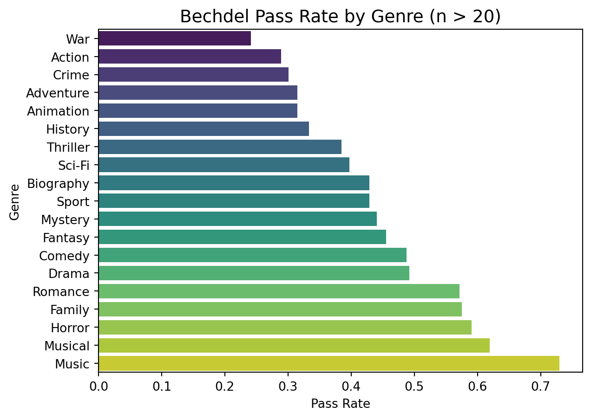
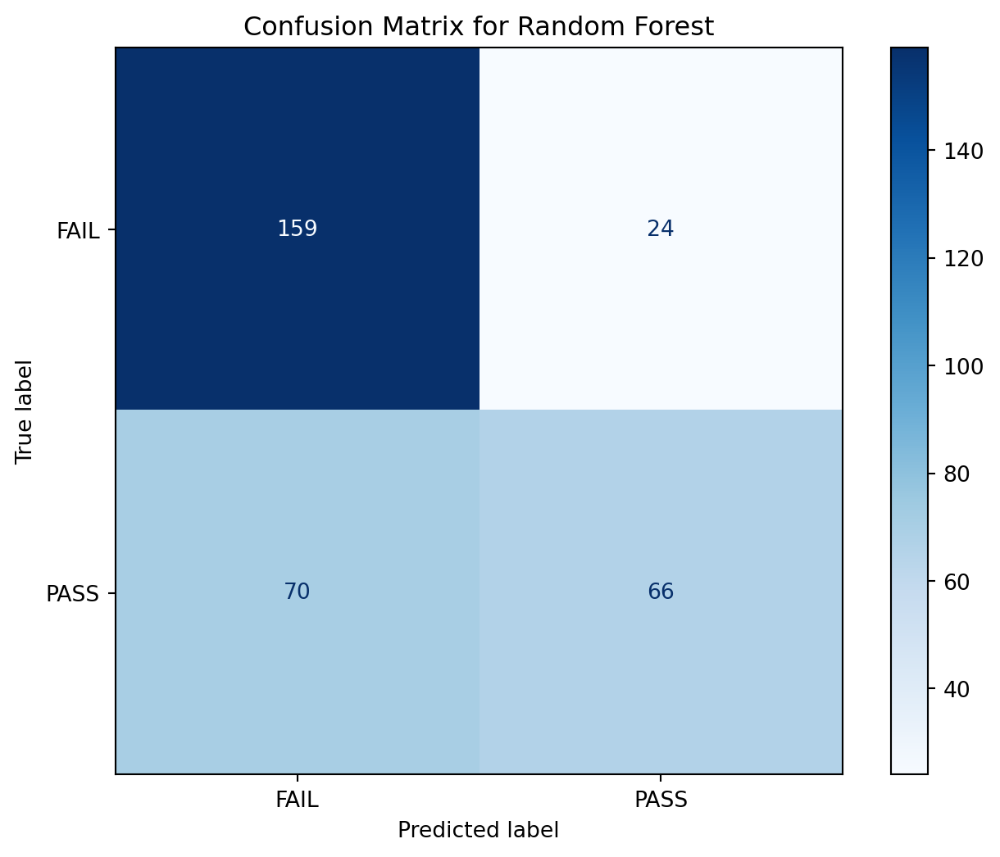

For my 2026 Winter Term class, we had to do an individual project using a dataset to create interesting data visualizations and learn something new. I chose to take a movie dataset, and learned how to use the package plotly, as well as create a shiny dashboard, to analyze movies that pass what is known as the Bechdel test. The Bechdel test is a simple way to gauge female representation and depth in movies, where a movie must satisy three criteria:
There are at least two named women in the picture
They have a conversation with each other at some point
That conversation isn’t about a male character
For this sample analysis, I chose to expand on this project by implementing machine learning techniques to predict whether a movie will or will not pass this test based on a series of features. This project has strengthened my ability to manipulate data and draw conclusions for a topic that I found interesting.
Packages
The main packages I used for this analysis includes pandas, numpy, seaborn, and importantly, sklearn. I also imported an xgboost package to run an XGB classifier which you’ll see later.
I loaded the dataset that I downloaded from FiveThirtyEight. I then dropped unneeded or unhelpful columns. Some of these columns included IDs, or columns that had too much text to be useful (plot, for example). Additionally, I dropped columns that would be too obvious in predicting its outcome (such as test and clean_test).
I cleaned the runtime and imdb_votes column by dropping the word “min” and removing the comma, respectively.
I also split the genre and language column, so each genre and language could be evauluated separately, rather than as one variable.
Finally, I mapped the binary column to 0 for FAIL and 1 for PASS.
Code
# Load datasetmovies_raw = pd.read_csv('movies.csv')#Drop uneeded columnscols_to_drop = ['imdb', 'title', 'test', 'clean_test', 'code', 'imdb_id', 'response', 'poster', 'type', 'plot', 'awards', 'error', 'period_code', 'decade_code', 'actors', 'director', 'budget', 'domgross', 'intgross', 'actors', 'writer', 'released']movies_clean = movies_raw.drop(columns=cols_to_drop)# Handle missing values - drop them. We have enough rows. Should not impute thesemovies_clean = movies_clean.dropna(subset=['imdb_rating', 'genre', 'runtime'])# Clean runtime column by dropping min and imdb_votes by removing commamovies_clean['runtime'] = movies_clean['runtime'].str.extract(r'(\d+)').astype(int)movies_clean['imdb_votes'] = movies_clean['imdb_votes'].str.replace(',', '').astype(float)#Split language and genre columnsgenres_split = movies_clean['genre'].str.get_dummies(sep=', ')languages_split = movies_clean['language'].str.get_dummies(sep=', ')genres_split = genres_split.add_prefix('genre_')languages_split = languages_split.add_prefix('lang_')# Concatenate them back to your main dataframemovies_final = pd.concat([movies_clean, genres_split, languages_split], axis=1)# Map PASS to 1 and FAIL to 0 movies_final['binary'] = movies_final['binary'].map({'PASS': 1, 'FAIL': 0})
Exploratory Data Analysis (EDA)
I then conducted an Exploratory Data Analysis, or EDA, to discover any patterns or hidden relationships before we began building models. For the first plot, we can get a count of how many movies pass or fail the test, seeing if there are any imbalanced classes.
Second, I made a box plot to see if budget played a role in whether or not a film would pass or not.
Third, I made a line chart showing the pass rate of films, and how it has changed over time.
Finally, I created a bar chart to reveal any genre bias from the films, on whether or not that played a part in a film passing the test.
Code
# First let's take a count to ensure that our outcomes are somewhat balanced, which they are.sns.countplot(data=movies_clean, x='binary')plt.title('Bechdel Test Pass Rate', fontsize=14)plt.ylabel('Movie Count')plt.xlabel('Pass or Fail')plt.grid(alpha=0.3)

Code
#Then create a box plot to see if budget plays a significant role in predictionsns.boxplot(data=movies_clean, x='binary', y='budget_2013', palette={'PASS': '#18bc9c', 'FAIL': '#e74c3c'})plt.yscale('log')plt.title('Budget Distribution by Bechdel Result (Log Scale)', fontsize=14)plt.ylabel('Budget (2013 Inflation-Adjusted)')
Text(0, 0.5, 'Budget (2013 Inflation-Adjusted)')

Code
#Create a dataframe that groups movies passing by the yeartrend_df = movies_clean.groupby('year')['binary'].value_counts(normalize=True).unstack().reset_index()trend_df['pass_percentage'] = trend_df['PASS'] *100#Create a line plotsns.lineplot(data=trend_df, x='year', y='pass_percentage', color='#18bc9c', linewidth=2)plt.title('Pass Rate Over Time', fontsize=14)plt.ylabel('Percentage of Movies Passing (%)')plt.xlabel('Year')plt.grid(alpha=0.3)

Code
# Create a dataframe that splits the genre into separate rowsgenre_df = movies_clean.dropna(subset=['genre', 'binary']).copy()genre_df['genre'] = genre_df['genre'].str.split(', ')genre_exploded = genre_df.explode('genre')#Now from each genre calculate how many pass in each genregenre_stats = genre_exploded.groupby('genre')['binary'].value_counts(normalize=True).unstack().reset_index()genre_counts = genre_exploded['genre'].value_counts().reset_index()genre_counts.columns = ['genre', 'count']#Filtering so that there are at least 20 movies in each genregenre_analysis = pd.merge(genre_stats, genre_counts, on='genre')genre_analysis = genre_analysis[genre_analysis['count'] >20].sort_values('PASS', ascending=True) #this dropped documentary and westernsns.barplot(data=genre_analysis, y='genre', x='PASS', palette='viridis')plt.title('Bechdel Pass Rate by Genre (n > 20)', fontsize=14)plt.xlabel('Pass Rate')plt.ylabel('Genre')
Text(0, 0.5, 'Genre')

Preprocessing
For preprocessing, I first made a list of the categorical and numerical features. Then I made two separate transformers.
For the numerical transformer, it first imputes missing values with the median, log scales the budgets (since it can be from a big range), and finally, scales it, which isn’t completely necessary, but doesn’t hurt either.
For the categorical transformer, it imputes any missing values with the word “missing.”
I then split my data using a training set of 80% and a test set of 20%, and a random seed of 4025.
Code
X = movies_final[cat_cols + num_cols]y = movies_final['binary']X_train, X_test, y_train, y_test = train_test_split(X, y, test_size=0.2, random_state=4025)
Defining Models
The first model I fit was a decision tree classifier. The second model I fit was a random forest classifier. And finally, I fit a XGBoost model. Before tuning, I then compared the three models.
I chose the decision tree classifier as my baseline model, since it is a simple and interpretable model. Although it would likely not outperform the random forest or XGBoost, it is the easiest to read and explain.
The second model is the random forest model, which is like a decision tree, but now produces many decision trees and combines its predictions to produce an accurate and stable result.
The third model, XGBoost, is an ensemble model that sequentially builds trees, correcting the errors of the previous one.
The XGBoost performed the best in all areas, aside from the Recall (Pass), where it was beat by the Decision Tree. The primary metrics I used to evaluate were the Accuracy Score, F1-Macro Score, and Precision and Recall for the Pass rate.
Code
#Create function that calcaulates the following scores from the modelsdef get_metrics(model, X, y): preds = model.predict(X)return {'Accuracy': accuracy_score(y, preds),'F1-Macro': f1_score(y, preds, average='macro'),'Precision (Pass)': precision_score(y, preds),'Recall (Pass)': recall_score(y, preds) }#Create a print a dataframe of results from untuned modelsuntuned_comparison = pd.DataFrame({'Decision Tree': get_metrics(dtc_pipeline, X_test, y_test),'Random Forest (Untuned)': get_metrics(rfc_pipeline, X_test, y_test),'XGBoost (Untuned)': get_metrics(xgb_pipeline, X_test, y_test)}).Tprint(untuned_comparison.round(3))
To tune the Random Forest and XGBoost models, I used a grid search to find the best parameters for the two models.
I chose to do it based off the F1-Macro score as it provides a balance between the precision and recall score.
Generate Predictions
I then pulled the best model and parameters from the Random Forest and XGBoost model, and made predictions for the Decision Tree, Random Forest, and XGBoost model.
Code
# Create predictions for tuned and best models (except for decision tree classifier)dtc_pred = dtc_pipeline.predict(X_test)best_rfc_model = grid_search.best_estimator_best_rfc_pred = best_rfc_model.predict(X_test)best_xgb_model = grid_search.best_estimator_best_xgb_pred = best_xgb_model.predict(X_test)
Model Comparison
Using the same function from the untuned models, I then recalled this to evaluate the now tuned models. Interestingly enough, the Random Forest and XGBoost models performed the same.
The model performs very well with Precision and Accuracy, but struggles with Recall. So, what does this mean in the context of my project?
A high precision score but low recall score indicates that this model is more conservative or picky with its choices. The high precision indicates that the model has high credibility that when it labels a movie as “pass”, it passes. On the other hand, it has low recall, meaning it misses many films that do pass the test. When the model claims it passes, it’s right about 73% of the time. However, of all the movies that do pass, it only found about 49%.
Using this, we can say that it is much easier to determine whether a movie is going to fail, than it is going to pass. It’s quite accurate when labeling it as passing, but struggles to catch all movies that do pass.
Choosing Random Forest for simplicity. I then created a confusion matrix which allows us to easily see what the model is predicting correctly.
Code
cm = confusion_matrix(y_test, best_rfc_pred)fig, ax = plt.subplots(figsize=(8, 6))disp = ConfusionMatrixDisplay(confusion_matrix=cm, display_labels=['FAIL', 'PASS'])disp.plot(cmap='Blues', ax=ax, values_format='d')plt.title('Confusion Matrix for Random Forest')plt.grid(False)plt.show()

Feature Importance Chart for Random Forest
Additionally, I created a feature importance chart for the Random Forest model, allowing us to easily see which features are significant in predicting its outcome.
This Sample Analysis aimed to create a model that would predict whether a movie would pass or fail what is known as the Bechdel Test. Through the steps of data cleaning, preprocessing, model tuning and evaluation, and finally model selection, these steps were carefully chosen to demonstrate the best uses of Machine Learning.
The three models: Decision Tree, Random Forest, and XGBoost were all fit and compared using its Accuracy, F1-Macro, and Precision and Recall Score. The Random Forest and XGBoost models performed nearly the same after being tuned, and for simplicity sake, I chose the Random Forest Model to produce the Confusion Matrix and Feature Importance Chart. The Random Forest model was able to correctly identify 73% of passing movies.
Using the feature importance chart, we can see that the most important features in predicting a movie’s pass or fail are its number of IMDB votes, normalized 2013 budget, and release year.
In conclusion, we can see that there are important predictors in determining whether a not a movie would pass the Bechdel test. Moving forward, being able to rerun this model with additional columns (such as gender of the director) and more recent films would provide an interesting insight into future steps.
Source Code
---title: "Sample Analysis: The Bechdel Test (Revisited)"author: "Hannah Mills"date: "2026-05-11"format: html: code-fold: true code-tools: true df-print: paged---# IntroductionFor my 2026 Winter Term class, we had to do an individual project using a dataset to create interesting data visualizations and learn something new. I chose to take a movie dataset, and learned how to use the package plotly, as well as create a shiny dashboard, to analyze movies that pass what is known as the Bechdel test. The Bechdel test is a simple way to gauge female representation and depth in movies, where a movie must satisy three criteria:1. There are at least two named women in the picture2. They have a conversation with each other at some point3. That conversation isn’t about a male characterFor this sample analysis, I chose to expand on this project by implementing machine learning techniques to predict whether a movie will or will not pass this test based on a series of features. This project has strengthened my ability to manipulate data and draw conclusions for a topic that I found interesting.# PackagesThe main packages I used for this analysis includes pandas, numpy, seaborn, and importantly, sklearn. I also imported an xgboost package to run an XGB classifier which you'll see later.```{python}import pandas as pdimport numpy as npimport seaborn as snsimport matplotlib.pyplot as pltfrom sklearn.compose import ColumnTransformerfrom sklearn.pipeline import Pipelinefrom sklearn.impute import SimpleImputerfrom sklearn.preprocessing import OneHotEncoder, LabelEncoder, StandardScaler, FunctionTransformerfrom sklearn.ensemble import GradientBoostingClassifier, RandomForestClassifierfrom sklearn.metrics import classification_report, confusion_matrix, ConfusionMatrixDisplay, balanced_accuracy_score, f1_score, accuracy_score, precision_score, recall_scorefrom sklearn.model_selection import GridSearchCV, RepeatedStratifiedKFold, train_test_splitfrom sklearn.tree import DecisionTreeClassifier, plot_treefrom xgboost import XGBClassifier```# Data Cleaning and LoadingI loaded the dataset that I downloaded from FiveThirtyEight. I then dropped unneeded or unhelpful columns. Some of these columns included IDs, or columns that had too much text to be useful (plot, for example). Additionally, I dropped columns that would be too obvious in predicting its outcome (such as test and clean_test). I cleaned the runtime and imdb_votes column by dropping the word "min" and removing the comma, respectively. I also split the genre and language column, so each genre and language could be evauluated separately, rather than as one variable. Finally, I mapped the binary column to 0 for FAIL and 1 for PASS. ```{python}# Load datasetmovies_raw = pd.read_csv('movies.csv')#Drop uneeded columnscols_to_drop = ['imdb', 'title', 'test', 'clean_test', 'code', 'imdb_id', 'response', 'poster', 'type', 'plot', 'awards', 'error', 'period_code', 'decade_code', 'actors', 'director', 'budget', 'domgross', 'intgross', 'actors', 'writer', 'released']movies_clean = movies_raw.drop(columns=cols_to_drop)# Handle missing values - drop them. We have enough rows. Should not impute thesemovies_clean = movies_clean.dropna(subset=['imdb_rating', 'genre', 'runtime'])# Clean runtime column by dropping min and imdb_votes by removing commamovies_clean['runtime'] = movies_clean['runtime'].str.extract(r'(\d+)').astype(int)movies_clean['imdb_votes'] = movies_clean['imdb_votes'].str.replace(',', '').astype(float)#Split language and genre columnsgenres_split = movies_clean['genre'].str.get_dummies(sep=', ')languages_split = movies_clean['language'].str.get_dummies(sep=', ')genres_split = genres_split.add_prefix('genre_')languages_split = languages_split.add_prefix('lang_')# Concatenate them back to your main dataframemovies_final = pd.concat([movies_clean, genres_split, languages_split], axis=1)# Map PASS to 1 and FAIL to 0 movies_final['binary'] = movies_final['binary'].map({'PASS': 1, 'FAIL': 0})```# Exploratory Data Analysis (EDA)I then conducted an Exploratory Data Analysis, or EDA, to discover any patterns or hidden relationships before we began building models. For the first plot, we can get a count of how many movies pass or fail the test, seeing if there are any imbalanced classes. Second, I made a box plot to see if budget played a role in whether or not a film would pass or not.Third, I made a line chart showing the pass rate of films, and how it has changed over time. Finally, I created a bar chart to reveal any genre bias from the films, on whether or not that played a part in a film passing the test.```{python}#| warning: false# First let's take a count to ensure that our outcomes are somewhat balanced, which they are.sns.countplot(data=movies_clean, x='binary')plt.title('Bechdel Test Pass Rate', fontsize=14)plt.ylabel('Movie Count')plt.xlabel('Pass or Fail')plt.grid(alpha=0.3)``````{python}#| warning: false#Then create a box plot to see if budget plays a significant role in predictionsns.boxplot(data=movies_clean, x='binary', y='budget_2013', palette={'PASS': '#18bc9c', 'FAIL': '#e74c3c'})plt.yscale('log')plt.title('Budget Distribution by Bechdel Result (Log Scale)', fontsize=14)plt.ylabel('Budget (2013 Inflation-Adjusted)')``````{python}#Create a dataframe that groups movies passing by the yeartrend_df = movies_clean.groupby('year')['binary'].value_counts(normalize=True).unstack().reset_index()trend_df['pass_percentage'] = trend_df['PASS'] *100#Create a line plotsns.lineplot(data=trend_df, x='year', y='pass_percentage', color='#18bc9c', linewidth=2)plt.title('Pass Rate Over Time', fontsize=14)plt.ylabel('Percentage of Movies Passing (%)')plt.xlabel('Year')plt.grid(alpha=0.3)``````{python}#| warning: false# Create a dataframe that splits the genre into separate rowsgenre_df = movies_clean.dropna(subset=['genre', 'binary']).copy()genre_df['genre'] = genre_df['genre'].str.split(', ')genre_exploded = genre_df.explode('genre')#Now from each genre calculate how many pass in each genregenre_stats = genre_exploded.groupby('genre')['binary'].value_counts(normalize=True).unstack().reset_index()genre_counts = genre_exploded['genre'].value_counts().reset_index()genre_counts.columns = ['genre', 'count']#Filtering so that there are at least 20 movies in each genregenre_analysis = pd.merge(genre_stats, genre_counts, on='genre')genre_analysis = genre_analysis[genre_analysis['count'] >20].sort_values('PASS', ascending=True) #this dropped documentary and westernsns.barplot(data=genre_analysis, y='genre', x='PASS', palette='viridis')plt.title('Bechdel Pass Rate by Genre (n > 20)', fontsize=14)plt.xlabel('Pass Rate')plt.ylabel('Genre')```# PreprocessingFor preprocessing, I first made a list of the categorical and numerical features. Then I made two separate transformers.For the numerical transformer, it first imputes missing values with the median, log scales the budgets (since it can be from a big range), and finally, scales it, which isn't completely necessary, but doesn't hurt either.For the categorical transformer, it imputes any missing values with the word "missing."```{python}#Make a list of categorical and numerical featurescat_cols = ['rated', 'country'] +list(genres_split.columns) +list(languages_split.columns)num_cols = ['year', 'budget_2013', 'domgross_2013', 'intgross_2013', 'metascore', 'imdb_rating', 'runtime', 'imdb_votes']numeric_transformer = Pipeline(steps=[ ('imputer', SimpleImputer(strategy='median')), ('log', FunctionTransformer(np.log1p, feature_names_out='one-to-one')), ('scaler', StandardScaler())])categorical_transformer = Pipeline(steps=[ ('imputer', SimpleImputer(strategy='constant', fill_value='missing')), ('onehot', OneHotEncoder(handle_unknown='ignore'))])preprocessor = ColumnTransformer( transformers=[ ('num', numeric_transformer, num_cols), ('cat', categorical_transformer, cat_cols) ])```# Splitting DataI then split my data using a training set of 80% and a test set of 20%, and a random seed of 4025.```{python}X = movies_final[cat_cols + num_cols]y = movies_final['binary']X_train, X_test, y_train, y_test = train_test_split(X, y, test_size=0.2, random_state=4025)```# Defining ModelsThe first model I fit was a decision tree classifier. The second model I fit was a random forest classifier. And finally, I fit a XGBoost model. Before tuning, I then compared the three models. I chose the decision tree classifier as my baseline model, since it is a simple and interpretable model. Although it would likely not outperform the random forest or XGBoost, it is the easiest to read and explain. The second model is the random forest model, which is like a decision tree, but now produces many decision trees and combines its predictions to produce an accurate and stable result. The third model, XGBoost, is an ensemble model that sequentially builds trees, correcting the errors of the previous one. ```{python}dtc_pipeline = Pipeline(steps=[ ('preprocessor', preprocessor), ('classifier', DecisionTreeClassifier(random_state=4025))])#Fit pipelinedtc_pipeline.fit(X_train, y_train)#Create tree modeltree_model = dtc_pipeline.named_steps['classifier']feature_names = dtc_pipeline.named_steps['preprocessor'].get_feature_names_out()#Display modelplt.figure(figsize=(20,10))plot_tree( tree_model, feature_names = feature_names, class_names=['Failed', 'Passed'], filled=True, rounded=True, max_depth=3)plt.show()``````{python}#| include: false# Fit random forest classifier pipeline and modelrfc_pipeline = Pipeline(steps=[ ('preprocessor', preprocessor), ('classifier', RandomForestClassifier(n_estimators=100, random_state=4025))])rfc_pipeline.fit(X_train, y_train)``````{python}#| include: false# Fit XGBoost pipeline and modelxgb_pipeline = Pipeline(steps=[ ('preprocessor', preprocessor), ('classifier', XGBClassifier(objective='multi:softmax', num_class=3))])xgb_pipeline.set_params(classifier=GradientBoostingClassifier())xgb_pipeline.fit(X_train, y_train)```## Comparison BEFORE TuningThe XGBoost performed the best in all areas, aside from the Recall (Pass), where it was beat by the Decision Tree. The primary metrics I used to evaluate were the Accuracy Score, F1-Macro Score, and Precision and Recall for the Pass rate.```{python}#Create function that calcaulates the following scores from the modelsdef get_metrics(model, X, y): preds = model.predict(X)return {'Accuracy': accuracy_score(y, preds),'F1-Macro': f1_score(y, preds, average='macro'),'Precision (Pass)': precision_score(y, preds),'Recall (Pass)': recall_score(y, preds) }#Create a print a dataframe of results from untuned modelsuntuned_comparison = pd.DataFrame({'Decision Tree': get_metrics(dtc_pipeline, X_test, y_test),'Random Forest (Untuned)': get_metrics(rfc_pipeline, X_test, y_test),'XGBoost (Untuned)': get_metrics(xgb_pipeline, X_test, y_test)}).Tprint(untuned_comparison.round(3))```# Tuning ModelsTo tune the Random Forest and XGBoost models, I used a grid search to find the best parameters for the two models.I chose to do it based off the F1-Macro score as it provides a balance between the precision and recall score.```{python}#| include: false#Define gridparam_grid1 = {'classifier__max_features': [None, 'sqrt', 'log2', 0.2, 0.5, 0.8]}#Begin grid searchcv_strategy1 = RepeatedStratifiedKFold(n_splits=5, n_repeats=3, random_state=4025)grid_search = GridSearchCV( estimator=rfc_pipeline, param_grid=param_grid1, cv=cv_strategy1, scoring='f1_macro', n_jobs=-1)#Fit and print best scores and max featuresgrid_search.fit(X_train, y_train)``````{python}#| include: false#| #Make stratified k fold and param grid, run grid searchcv_strategy2 = RepeatedStratifiedKFold(n_splits=5, n_repeats=3, random_state=4025)param_grid2 = {'classifier__n_estimators': [50, 100, 200, 300],'classifier__learning_rate': [0.05, 0.1, 0.2]}grid_search = GridSearchCV( estimator=xgb_pipeline, param_grid=param_grid2, cv=cv_strategy2, scoring='f1_macro', n_jobs=-1, verbose=1)grid_search.fit(X_train, y_train)```# Generate PredictionsI then pulled the best model and parameters from the Random Forest and XGBoost model, and made predictions for the Decision Tree, Random Forest, and XGBoost model.```{python}# Create predictions for tuned and best models (except for decision tree classifier)dtc_pred = dtc_pipeline.predict(X_test)best_rfc_model = grid_search.best_estimator_best_rfc_pred = best_rfc_model.predict(X_test)best_xgb_model = grid_search.best_estimator_best_xgb_pred = best_xgb_model.predict(X_test)```# Model ComparisonUsing the same function from the untuned models, I then recalled this to evaluate the now tuned models. Interestingly enough, the Random Forest and XGBoost models performed the same. The model performs very well with Precision and Accuracy, but struggles with Recall. So, what does this mean in the context of my project?A high precision score but low recall score indicates that this model is more conservative or picky with its choices. The high precision indicates that the model has high credibility that when it labels a movie as "pass", it passes. On the other hand, it has low recall, meaning it misses many films that do pass the test. When the model claims it passes, it's right about 73% of the time. However, of all the movies that do pass, it only found about 49%. Using this, we can say that it is much easier to determine whether a movie is going to fail, than it is going to pass. It's quite accurate when labeling it as passing, but struggles to catch all movies that do pass. ```{python}#Print resultstuned_comparison = pd.DataFrame({'Decision Tree': get_metrics(dtc_pipeline, X_test, y_test),'Random Forest (Tuned)': get_metrics(best_rfc_model, X_test, y_test),'XGBoost (Tuned)': get_metrics(best_xgb_model, X_test, y_test)})print(tuned_comparison.round(3))```# Confusion Matrix for Random ForestChoosing Random Forest for simplicity. I then created a confusion matrix which allows us to easily see what the model is predicting correctly. ```{python}cm = confusion_matrix(y_test, best_rfc_pred)fig, ax = plt.subplots(figsize=(8, 6))disp = ConfusionMatrixDisplay(confusion_matrix=cm, display_labels=['FAIL', 'PASS'])disp.plot(cmap='Blues', ax=ax, values_format='d')plt.title('Confusion Matrix for Random Forest')plt.grid(False)plt.show()```# Feature Importance Chart for Random ForestAdditionally, I created a feature importance chart for the Random Forest model, allowing us to easily see which features are significant in predicting its outcome.```{python}#| warning: false#Get feature names and calculate rf_importancesfeature_names = best_rfc_model.named_steps['preprocessor'].get_feature_names_out()rf_importances = best_rfc_model.named_steps['classifier'].feature_importances_#Create dataframerf_imp_df = pd.DataFrame({'Feature': feature_names, 'Importance': rf_importances})rf_imp_df = rf_imp_df.sort_values(by='Importance', ascending=False)#Only keep top 10rf_imp_top10 = rf_imp_df.head(10)plt.figure(figsize=(10, 6))sns.barplot(x='Importance', y='Feature', data=rf_imp_top10, palette='magma')plt.title("Random Forest: Variable Importance")plt.show()```# ConclusionThis Sample Analysis aimed to create a model that would predict whether a movie would pass or fail what is known as the Bechdel Test. Through the steps of data cleaning, preprocessing, model tuning and evaluation, and finally model selection, these steps were carefully chosen to demonstrate the best uses of Machine Learning. The three models: Decision Tree, Random Forest, and XGBoost were all fit and compared using its Accuracy, F1-Macro, and Precision and Recall Score. The Random Forest and XGBoost models performed nearly the same after being tuned, and for simplicity sake, I chose the Random Forest Model to produce the Confusion Matrix and Feature Importance Chart. The Random Forest model was able to correctly identify 73% of passing movies.Using the feature importance chart, we can see that the most important features in predicting a movie's pass or fail are its number of IMDB votes, normalized 2013 budget, and release year. In conclusion, we can see that there are important predictors in determining whether a not a movie would pass the Bechdel test. Moving forward, being able to rerun this model with additional columns (such as gender of the director) and more recent films would provide an interesting insight into future steps.